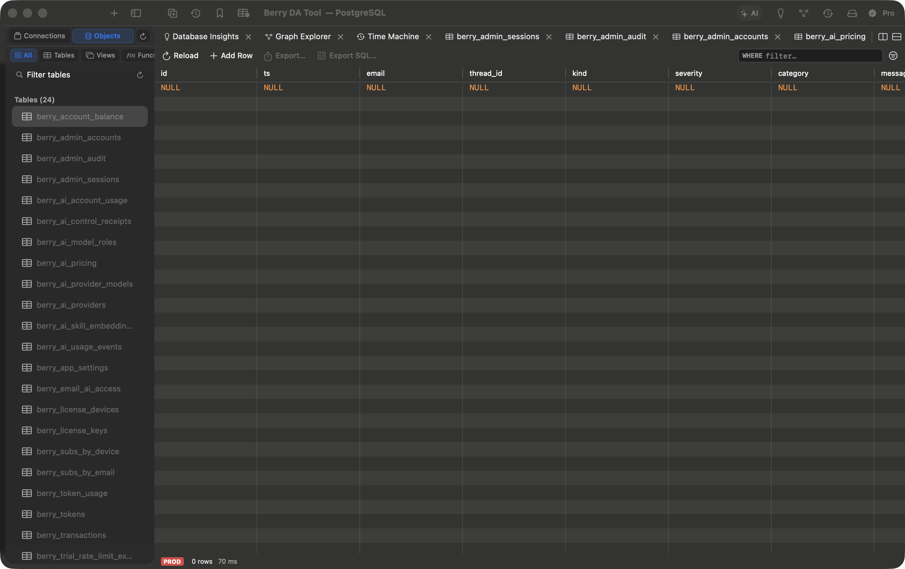
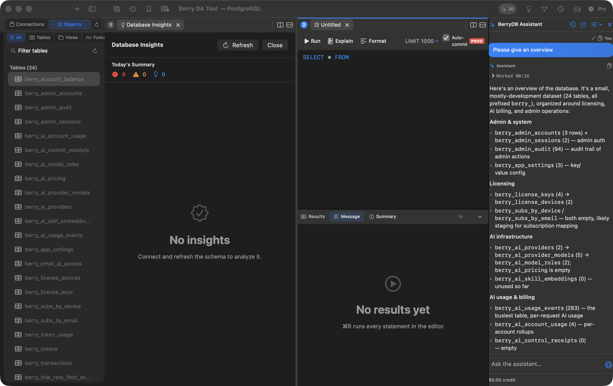
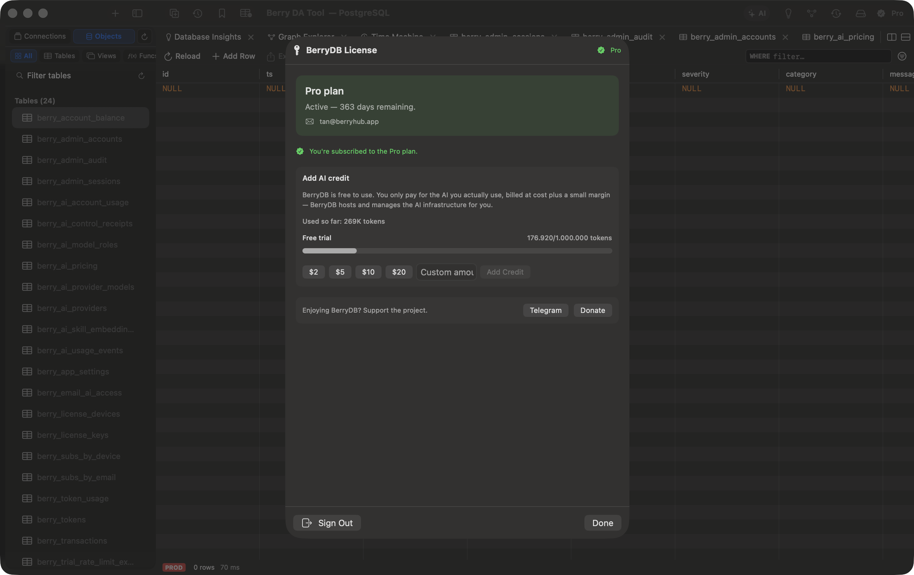

BerryDB Documentation
BerryDB is a native macOS database management client built with Swift 6 and AppKit. It is architected as an ultra-fast, lightweight alternative to web-wrapped or JVM-based database clients that consumes under 50MB of RAM and launches in under 150ms.
Hardware Grid
AppKit NSTableView streaming 1,000,000+ rows with zero frame drops.
Keychain Enclave
Hardware encrypted storage for all database passwords & SSH keys.
AI SQL Copilot
Schema-aware natural language query generation without data leaks.
Workspace & Multi-tab Navigation
BerryDB features an intuitive macOS layout with a collapsible connection sidebar, multi-tab SQL scratchpad, split-pane result grid, and interactive AI assistant sidebar.

Installation & Building From Source
Option 1: Official DMG Release (Recommended)
Download for Apple Silicon, macOS Sonoma (14.0+) & Sequoia:
Option 2: Build From Source with Swift SPM & Makefile
# 1. Clone repository
git clone https://github.com/berry-apps/berrydb-desktop.git && cd berrydb-desktop
# 2. Build and launch local development instance
make run
# 3. Assemble release bundle into dist/BerryDB.app
make app
60fps Streaming DataGrid
The AppKit NSTableView DataGrid delivers hardware-accelerated rendering capable of streaming millions of rows without locking the main thread. Supports inline cell editing, dynamic column sorting, and instant pagination.

AI SQL Copilot & Chat Assistant
Transform plain English prompts into optimized SQL queries for PostgreSQL, MySQL, SQLite, and DuckDB. The assistant understands your schema, foreign key relationships, and data types while ensuring zero row-data leakage.

Connection Profiles & SSH Bastion Tunnels
Configure direct connections, SSL/mTLS client certificates, and SSH Jump Hosts with RSA/Ed25519 keys to access private cloud VPC databases safely.

Visual Schema & Table Structure Designer
Inspect and alter columns, default constraints, primary keys, and B-Tree indexes visually without writing manual ALTER TABLE statements:

Visual EXPLAIN Query Plan Profiler
Press ⌘E to inspect the execution plan tree. Spot sequential scans, missing indexes, and expensive hash joins instantly with color-coded node cost tags:

Redis Key-Value & Cache Browser
Explore Redis databases (DB 0-15), search keys with wildcard patterns, inspect TTL values, and modify Strings, Hashes, Lists, Sets, and JSON data directly:

Import & Export Wizard
Fast batch imports and exports for CSV, JSON, NDJSON, and raw SQL dumps with automatic delimiter detection and transaction isolation:

Query Replay, History & Diagnostics
Review past SQL statements with precise execution duration timestamps, rows affected, and one-click query replay:

Supported Database Drivers
- PostgreSQL 12-16+: Citus, Timescale, CockroachDB, JSONB operators, real socket cancellation (
pg_cancel_backend). - MySQL 8.4+ & MariaDB: Full support for
caching_sha2_passwordandmysql_native_password. - SQLite 3: Native C
libsqlite3binding, Write-Ahead Logging (WAL), and zero setup file loading. - Microsoft SQL Server: T-SQL execution, table alteration, and stored procedure support.
- Redis: Key-value cache, TTL management, and JSON manipulation.
- DuckDB & ClickHouse: High-speed columnar OLAP queries on Parquet / Arrow files.
Keyboard Shortcuts Reference
| Action | Keyboard Shortcut | Context |
|---|---|---|
| Execute Query | ⌘ R / ⌘ Enter | SQL Editor |
| Command Palette | ⌘ K | Global |
| Visual EXPLAIN Plan | ⌘ E | SQL Editor |
| Format SQL Statement | ⌘ ⌥ F | SQL Editor |
| New Query Tab | ⌘ T | Workspace |
| Cancel Running Query | ⌘ . / ESC | Active Execution |
Frequently Asked Questions
Why does BerryDB use under 50MB RAM compared to traditional cross-platform tools (850MB+)?
BerryDB is compiled as a pure native macOS Mach-O binary with Swift 6 and AppKit. It does not bundle Chromium, Node.js, or Java JVM runtimes. Memory is allocated strictly on demand and released promptly.
Is my database data safe when using the AI Copilot?
Yes. BerryDB only sends table names, column names, and data types (schema metadata) to the AI model. No row data, personal values, or secret payloads are ever transmitted.
Community, Feedback & Support
Need assistance, have questions about database drivers, or want to contribute? Connect directly with the Berry Apps team: